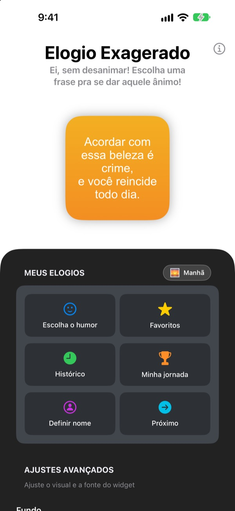
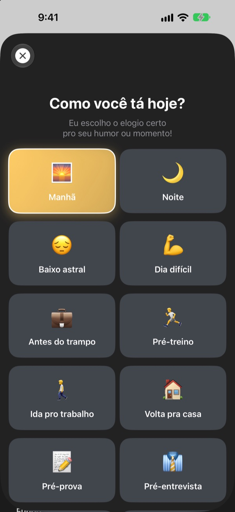
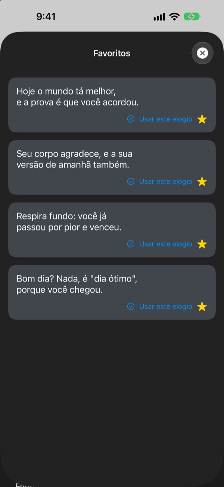
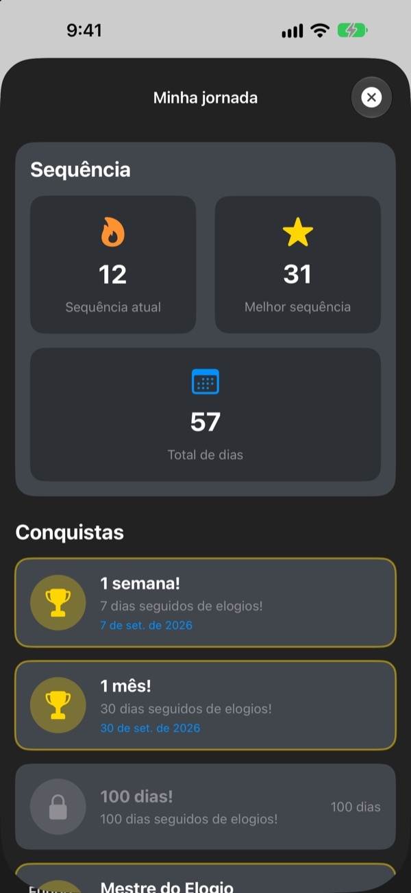

Toda vez que você pega o celular,
seu fã número um está lá
Elogio Exagerado é um widget que te elogia demais, de propósito. De manhã, elogio de manhã; antes da entrevista, elogio de entrevista. Fonte, cores e fundo ficam do jeito que você quiser.
Uma compra só e tudo liberado. Sem assinatura e sem anúncios.

Ganhe um elogio agora
Escolha um humor e o widget mostra o elogio certo para ele. Toque em Próximo para sortear um entre os 281.
Quem é o seu crítico mais duro? Será que é você?
Na ida pro trabalho, antes da entrevista, na volta pra casa, a voz na cabeça só reclama. O Elogio Exagerado fica do seu lado direto da Tela de Início, várias vezes por dia, um pouquinho além da conta. Na hora que você solta um sorriso, um pouco da confiança volta.
Um elogio para cada momento
Escolha entre 14 humores e situações como Manhã, Ida pro trabalho, Dia difícil, Pré-entrevista ou Pré-date, e o elogio certo aparece na hora no seu widget. Na dúvida? Tem Aleatório também.

Guarde os que você mais curtir
Toque na estrela para salvar nos Favoritos e reveja os anteriores no Histórico. Toque em Usar este elogio e ele vai direto pro widget.

Volte todo dia e veja somar
Cada dia que você confere aumenta a sua sequência. Com 7, 30 ou 100 dias seguidos, e 50 e 100 dias no total, você desbloqueia conquistas.

Comece em três passos
- 1
Escolha o humor
Abra
Escolha o humore toque no que combina com agora. - 2
Deixe o widget com a sua cara
Nos ajustes avançados, escolha fonte, cor do texto, fundo e frequência.
- 3
Coloque na Tela de Início
Toque e segure a Tela de Início, toque em + e procure Elogio Exagerado.
Do jeito que você quiser
- Fonte
- 13 opções, como Futura, Georgia e Marker Felt
- Cor do texto
- Qualquer cor que você curtir
- Fundo
- Um degradê de duas cores ou uma das fotos que vêm no app
- Alinhamento
- À esquerda, centralizado ou à direita
- Entrelinha
- Linhas mais juntas ou mais soltas
- Atualizar a cada
- Um elogio novo a cada 5, 15 ou 30 minutos
O tamanho do widget você escolhe ao adicionar na Tela de Início.
Comprou uma vez, pronto
O app
- 281 elogios para 14 humores
- Um widget de Tela de Início do seu jeito
- Favoritos e Histórico
- Sequências e conquistas
Apoie o desenvolvedor
- Escolha uma gorjeta pequena, média ou grande
- Não libera nada. É só um jeito de agradecer
Só se e quando der vontade.
Sem assinatura, sem compras extras e sem anúncios.
Perguntas frequentes
Como adiciono o widget?
Toque e segure um espaço vazio da Tela de Início até os ícones tremerem, toque em + lá em cima, procure Elogio Exagerado e escolha um tamanho.
Como o próximo elogio é escolhido?
Quando você escolhe um humor, um elogio desse humor aparece na hora no widget. Depois disso, o widget mostra um aleatório entre os 281 na frequência que você escolheu. No app, dá para tocar em Próximo e trocar você mesmo.
Dá para mudar a fonte ou a frequência do widget?
Dá. Nos ajustes avançados você muda fonte, cor do texto, fundo, alinhamento, entrelinha e frequência de atualização: 5, 15 ou 30 minutos.
O widget não mudou na hora.
Quem decide quando redesenhar os widgets é o iOS, então às vezes ele atrasa um pouco em relação à frequência escolhida. Abra o app e feche de novo, e o widget atualiza.
Como funciona a sequência?
Cada dia seguido em que você vê um elogio soma um na sequência. Em Minha jornada você vê a sequência atual, o recorde, o total de dias e as conquistas.
Meus favoritos e o histórico sumiram.
Tudo fica salvo só no seu aparelho, então não vai junto se você apagar o app ou trocar de celular. Se você não apagou e mesmo assim sumiu, manda um e-mail pra gente.
Meus dados são enviados para algum lugar?
Não. O app não coleta dados pessoais. Seus favoritos e seu histórico ficam no seu aparelho.
Como relato um bug ou sugiro uma ideia?
Direto em Falar com o dev no app, por e-mail ou por DM no Instagram @lee25_ios. A gente responde assim que ver.
Dúvidas ou sugestões? Escreva para leeo@kakao.com.